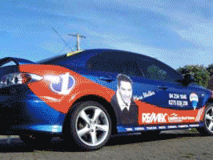
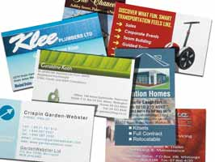

<?xml version="1.0" encoding="UTF-8"?><rss version="2.0"
	xmlns:content="http://purl.org/rss/1.0/modules/content/"
	xmlns:wfw="http://wellformedweb.org/CommentAPI/"
	xmlns:dc="http://purl.org/dc/elements/1.1/"
	xmlns:atom="http://www.w3.org/2005/Atom"
	xmlns:sy="http://purl.org/rss/1.0/modules/syndication/"
	xmlns:slash="http://purl.org/rss/1.0/modules/slash/"
	>

<channel>
	<title>Services &#8211; Free websites for printers</title>
	<atom:link href="http://www.zetaprints.com/freesite/category/services/feed" rel="self" type="application/rss+xml" />
	<link>http://www.zetaprints.com//freesite</link>
	<description>Just a sample of what you can do for free!</description>
	<lastBuildDate>Wed, 19 Oct 2011 09:53:17 +0000</lastBuildDate>
	<language>en-US</language>
	<sy:updatePeriod>hourly</sy:updatePeriod>
	<sy:updateFrequency>1</sy:updateFrequency>
	<generator>https://wordpress.org/?v=4.4.1</generator>
	<item>
		<title>Vehicle Graphics &#038; Wrap</title>
		<link>http://www.zetaprints.com//freesite/services/vehicle-graphics-wrap</link>
		<pubDate>Tue, 22 Apr 2008 07:05:14 +0000</pubDate>
		<dc:creator><![CDATA[admin]]></dc:creator>
				<category><![CDATA[Services]]></category>

		<guid isPermaLink="false">/freesite/?p=7</guid>
		<description><![CDATA[We can provide all types of vehicle graphics at very competitive prices. Only top quality vinyl is used for your vehicle wrap or vehicle graphics and you receive a one year guarantee against faulty workmanship or product. Delivery of vehicle graphics anywhere in New Zealand.]]></description>
				<content:encoded><![CDATA[<p>We can provide all types of vehicle graphics at very competitive prices. Only top quality vinyl is used for your vehicle wrap or vehicle graphics and you receive a one year guarantee against faulty workmanship or product. Delivery of vehicle graphics anywhere in New Zealand.</p>
<p style="text-align: center;"></p>
]]></content:encoded>
			</item>
		<item>
		<title>Real Estate signs</title>
		<link>http://www.zetaprints.com//freesite/services/real-estate-signs</link>
		<pubDate>Tue, 22 Apr 2008 07:03:07 +0000</pubDate>
		<dc:creator><![CDATA[admin]]></dc:creator>
				<category><![CDATA[Services]]></category>

		<guid isPermaLink="false">/freesite/?p=9</guid>
		<description><![CDATA[Your real estate signs can be designed in two ways. From emailed photos and text using a simple order form. Typically delivered within 48 hours. Secondly you can make up your own real estate sign from this website. Your template(s) need to be created and uploaded to the site and from there you can populate [&#8230;]]]></description>
				<content:encoded><![CDATA[<p></p>
<p>Your real estate signs can be designed in two ways.</p>
<ol>
<li>From emailed photos and text using a simple order form. Typically delivered within 48 hours.</li>
<li>Secondly you can make up your own real estate sign from this website. Your template(s) need to be created and uploaded to the site and from there you can populate all the fields and load your photos. No proofing as delivery in as little as 24 hours.</li>
</ol>
<h2>HANDOUT CARDS &amp; FLYERS</h2>
<p>You can also opt to receive marketing cards and flyers. These are available separately or as part of your sign order. When ordered at the same time discounts on the package apply. There is a good price advantage in ordering on line with no limits on templates. The first two templates are provided at no charge.</p>
<p style="text-align: center;"><a href="http://www.greyskills.co.nz/"></a></p>
]]></content:encoded>
			</item>
		<item>
		<title>Business cards &#038; letterhead</title>
		<link>http://www.zetaprints.com//freesite/services/business-cards-letterhead</link>
		<pubDate>Tue, 22 Apr 2008 05:44:30 +0000</pubDate>
		<dc:creator><![CDATA[admin]]></dc:creator>
				<category><![CDATA[Services]]></category>

		<guid isPermaLink="false">/freesite/?p=5</guid>
		<description><![CDATA[Individually designed or from a template. If your organisation has three or more employees then we can set up an online template for you to fill out whenever you need business cards. Log on, type in your details and submit the order. We will process and deliver your business cards in 24 hours provided the [&#8230;]]]></description>
				<content:encoded><![CDATA[<p></p>
<p>Individually designed or from a template. If your organisation has three or more employees then we can set up an online template for you to fill out whenever you need business cards. Log on, type in your details and submit the order. We will process and deliver your business cards in 24 hours provided the order is received by midday, and at prices you won’t beat.</p>
<p>The business cards are digitally printed on 300gsm satin stock in full colour with reverse print options. We do not offer any other paper options online because digital processes make this difficult. The print is process colour so some spot colours will not be able to be matched. Ask for a sample to check colours.</p>
<p>If you want an individually designed business card, or you want us to create a unique template for you or your business, contact us on</p>
<p><strong>04 902 8700</strong> or email <a href="mailto:info@etgraphics.co.nz"><strong>info@etgraphics.co.nz</strong></a></p>
<h2>LETTERHEAD</h2>
<p>Short runs of letterhead are also a specialty. Pricing is very affordable and your repeat orders can be completed online with essential information able to be changed and proofed, all via the web.</p>
]]></content:encoded>
			</item>
	</channel>
</rss>

<!-- Localized -->